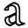

修改幾何形狀
在TecZone折彎中，您可以使用強大的2D草圖編輯器來修改、清理或添加到幾何形狀。使用捷徑鍵S進入草圖模式。編輯器在展開視圖中顯示零件。

在展開圖中，點擊清理圖示 或按捷徑鍵 S。此時會打開一個包含各種圖示的選單，用於加工展開圖的內容：
或按捷徑鍵 S。此時會打開一個包含各種圖示的選單，用於加工展開圖的內容：

草圖面板
| 圖示 | 符號 | 含義 |
|---|---|---|
|
選擇 |
選擇對象、線條、條目等 |
|
線 |
草繪線條草繪 |
連接線 |
草繪任意數量的線條 |
|
|
平行線 |
草繪線條的平行線 |
|
Normal |
草繪曲線的切線 |
折彎線 |
草繪線條的法線 |
|
|
中心弧 |
草繪折彎線 |
|
2 點圓弧 |
從中心點、起點和終點草繪弧線 |
|
3 點圓弧 |
透過兩個定義點（起點和終點）草繪圓弧 |
|
切線圓弧 |
草繪與草圖圖素相切的弧線 |
|
矩形 |
草繪矩形 |
|
矩形中心 |
從中心草繪矩形 |
|
圓周 |
草繪圓形。選擇圓的中心點並拖動光標以定義半徑，或輸入半徑值 |
|
2 點圓周 |
根據周長草繪圓形。選擇周長上的一個點，然後選擇第二點和第三點。 |
|
3 點圓周 |
根據周長草繪圓形。選擇周長上的一個點，然後選擇第二點和第三點。 |
|
2 切線圓周 |
用兩個切線草繪一個圓形。輸入圓直徑，然後選擇第一個和第二個切線。 |
|
3 切線圓周 |
用三個切線草繪一個圓形。輸入圓直徑，然後選擇第一個、第二個和第三個切線。 |
|
多邊形中心 - 角點 |
用三個切線草繪一個圓形。輸入圓直徑，然後選擇第一個、第二個和第三個切線。 |
|
多邊形中心 - 側邊中心 |
草繪多邊形。指定邊數並選擇中心點和側邊的中間 |
|
帶側邊的多邊形 |
草繪多邊形。指定邊數並定義一邊的起點和終點。 |
|
倒圓 |
在兩個草圖圖素的轉角處，使用輸入的半徑對角進行倒圓，由此創建切線弧 |
|
倒角 |
在兩個草圖圖素相交的角上建立一個斜角 |
|
角修整，圓形 |
使用輸入的半徑，對兩個草圖圖素相交處的轉角進行修邊 |
|
角修整，成角度地 |
使用矩形，對兩個草圖圖素相交處的轉角進行修邊。可以預先輸入矩形的大小。 |
|
正方形切口 |
建立矩形自由切割。您必須輸入轉角距離、自由切割深度，然後選擇一個轉角。 |
|
長孔切口 |
創建長孔形的自由切割。您必須輸入轉角距離、自由切割寬度、自由切割深度，然後選擇一個轉角。 |
|
三角形切口 |
創建三角形自由切割。您必須輸入轉角距離、自由切割寬度、自由切割深度，然後選擇一個轉角。 |
|
鍵槽 |
使用輸入的值在圓形中創建鍵孔。 |
|
3 段完整倒圓 |
對三個相連的草圖圖素倒圓 |
|
延長圖素 |
選擇要擴展的草圖圖素 |
|
修整圖素 |
選擇要修剪的草圖圖素 |
|
融合 |
用於將幾條獨立的折線修邊並將連接成一條 |
|
圖素偏差 |
按指定距離，偏移一個或多個草圖圖素、草圖模型邊緣或模型面 |
|
移動 |
使用ctrl選擇草圖圖素，然後選擇參考點移動草圖圖素 |
|
旋轉 |
使用ctrl選擇草圖圖素，選擇旋轉中心點，然後選擇起點和終點來旋轉草圖圖素 |
|
縮放尺寸 |
使用ctrl選擇草圖圖素，選擇基點，然後選擇起點參考點和終點參考點來縮放草圖圖素 |
|
建立鏡像 |
使用ctrl選擇草圖圖素，然後選擇鏡像線的起點，然後選擇鏡像線的終點來鏡像草圖圖素 |
|
線性模式 |
使用線性圖案創建一個或多個草圖的多個參考副本，以便您可以沿著一條或兩條線性路徑以相等距離放置空格。點擊線性圖案並輸入所需的值 |
|
圓周模式 |
使用圓形圖案創建一個或多個草圖的多個參考副本，以便您可以圍繞一個軸以相等距離放置空格。點擊圓形圖案並輸入所需的值 |
|
組合表面 |
選擇兩個或多個閉合的草圖圖素以相互結合表面 |
|
切割面 |
選擇兩個或多個閉合的草圖圖素以生成所選圖素的切割區域 |
|
修整表面 |
選擇兩個或多個閉合的草圖圖素來修邊表面 |
|
複製切口 |
您可以使用此工具沿邊緣創建缺口的多個副本。首先，輸入副本之間的間距以及想要創建缺口的副本數量。然後，點擊與缺口相鄰的雙線段來選擇缺口 |
|
刪除切口 |
您可以使用此工具刪除轉角處或沿線段的缺口。點擊與缺口相鄰的雙線段，缺口被移除 |
|
建立切口鏡像 |
您可以使用此工具鏡像轉角處或沿線段的缺口。點擊與缺口相鄰的雙線段，缺口被鏡像 |
|
連曲線 |
若要開始新的樣條，請點擊起點，然後點擊後續點，將會建立樣條。如果要關閉樣條，請按ALT鍵，然後點擊 |
設定檔 |
輸入底架長度、法蘭高度、厚度、法蘭角度、內徑並按Enter鍵，將建立型面 |
|
|
文本 |
用於繪製將由雷射機在零件上標記的文字。點擊此工具按鈕，輸入列會顯示文字、大小、和旋轉角度的輸入框 |
 |
文本 |
用於採用任何TrueType字體中的字元形狀，並將其轉換為折線。然後可以在這些折線上應用雷射加工，並且可以切割它們。首次點擊此按鈕時，會出現「字體」對話方塊，您可選擇用於文字的字體 |
|
標準形狀 |
用於創建幾個常見形狀並將其插入圖紙中。點擊此按鈕，將出現「創建形狀」對話方塊，您可從列出的常見形狀的庫中進行選擇 |
|
簡單的尺寸標注 |
選擇第一個尺寸標註點，然後選擇第二個尺寸標註點並定位尺寸標註線 |
|
基線尺寸標注 |
選擇第一個尺寸標註點，然後選擇第二個尺寸標註點並定位尺寸標註線 |
|
尺寸鏈 |
選擇第一個尺寸標註點，然後選擇第二個尺寸標註點、定位尺寸標註線並選擇下一個尺寸標註點 |
|
水準座標尺寸 |
坐標尺寸是從圖紙中的坐標零點開始測量的一組尺寸。選擇參考點並定位尺寸標註 |
|
垂直座標尺寸 |
坐標尺寸是從圖紙中的坐標零點開始測量的一組尺寸。選擇參考點並定位尺寸標註 |
|
角度尺寸標注 |
為角度建立尺寸標註。選擇要標註角度尺寸的第一條線，然後選擇第二條線 |
|
半徑尺寸標注 |
為半徑建立尺寸標註。選擇要建立半徑尺寸標註的圓。將直徑尺寸調整為 ctrl |
|
用實心引線標注半徑尺寸 |
用連續引線為半徑創建尺寸標註。選擇要建立半徑尺寸標註的圓。將直徑尺寸調整為 ctrl |
|
標注 |
用於以標註的形式將提示添加到圖紙。要建立標註，輸入要顯示的文字，點擊以指示箭頭應指向的位置，然後再次點擊以指示文字應放置的位置。 |
|
分段尺寸標注 |
用於為直線和曲線段添加尺寸標註。點擊要尺寸標註的段，然後再次點擊以定位尺寸。或按住並點擊段以自動定位尺寸。 |